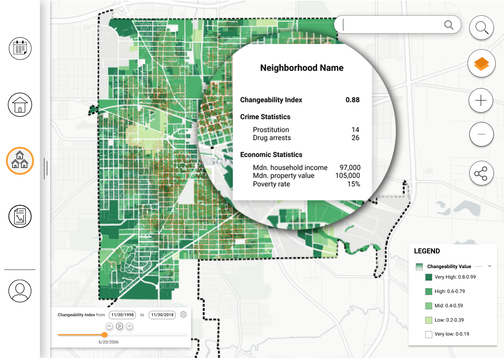
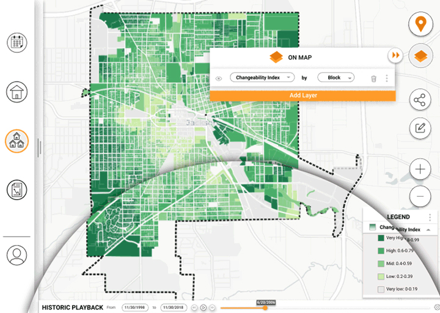
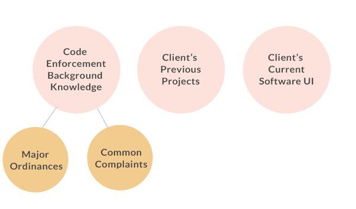
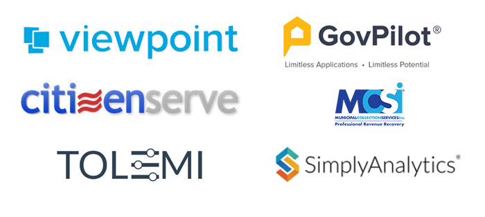
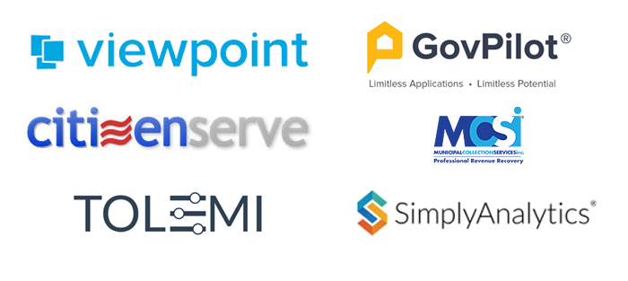
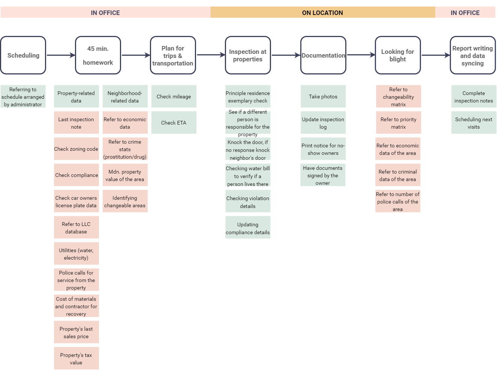
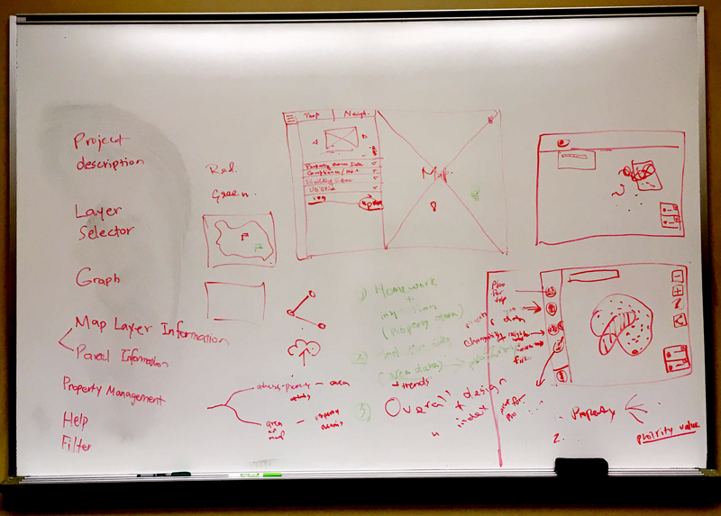
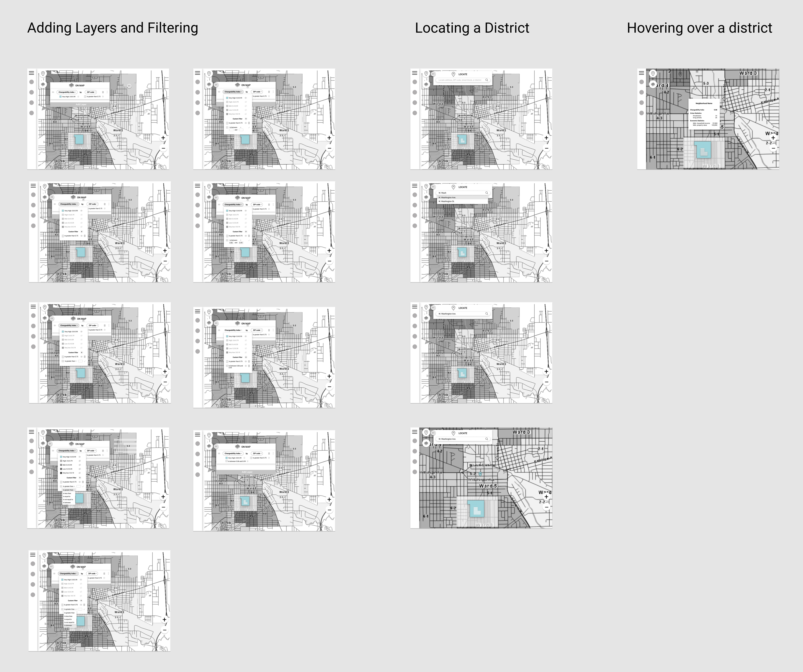
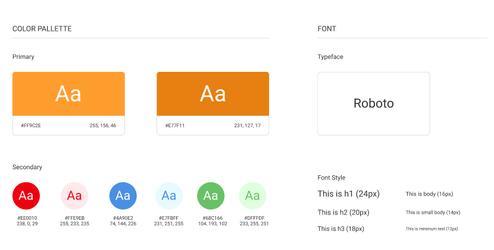
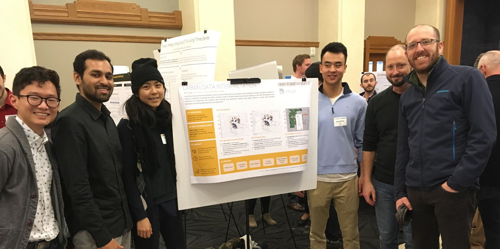

Urban data visualization.
In FAll 2018, I was selected to be a UX designer at infoLab (now Design Clinic), an extracurricular initiative that bridges School of Information students with local businesses to tackle a real-world product challenge.
*Some details of the project has been intentionally blurred out. Please contact me for more information.
Project Duration
1 semester
Sep 2018 - Jan 2019
Team Formation
3 UX-focused students
2 data-focused students
Main delievereables
A UX research report
A mid-fidelity design mockup
THE CHALLENGE
How might we help code enforcement officers leverage Dynamo Metrics' data power for their daily inspection work?
As a data-visualization and consulting company, Dynamo Metrics has been in the making of a tailor-made data visualization application for the code enforcement team at the City of Jackson. With little UX resources, the company was in need of deeper understanding of user needs and a mid-fidelity prototype that helps code enforcement officers better access their urban data.
Our team was tasked to help our client design a platform for the City of Jackson.
KEY RESEARCH FINDINGS
Insights generated from multiple research methods
Over the course of heuristic evaluation, field research, observation and interviews, our findings can be categorized into four key areas.
SOLUTION OVERVIEW
Neightborhood Data: helping officers easily interpret district-level data
I was solely responsible for redesigning the neighborhood data feature of the application.
1. Neighborhood Summary
- Switching between different pages on the platform was tedious.
- Having to rely on other department to visualize neighborhood data for further analysis.
- Not knowing how to quickly identify regions the team should focus on.
- Check instant summary of an area on the map.
- An added 'changeability index' that visualizes the most urgently manpower-needed areas within the city.

A neighborhood summary panel shows up when the user mouses over or taps on an area on the map.
2. New Layer Adding Process
- Adding layers on a long checklist menu requires much mental effort.
- Users have to manually uncheck and recheck an item in order to move a layer to the top.
- Data types are added on a separated layer building panel.
- Easily toggle and drag-and-drop layers to manipulate layer display.
The original layer adding process requires users to memorize the order of each data layer, as well as its colors.
The new design comes with a separated layer adding panel, a list of current layers on map, as well as a legend.
3. Locate and pin
- Officers were not able to save an observed location for future reference.
- Locate and pin an area to easily go back to where you left off.
Locate and pin an area to easily go back to where you left off.
4. Redesigned playback panel
Pain Points
- Not able to tell the starting and ending points in time in historic trend timeline.
Solution
- Set starting and ending points, and easily observe changes on the map view.
Old playback design.

The new design with clear start and end points and lengthened playback bar.
THE PROCESS
UX RESEARCH
Getting the domain knowledge and understanding users
My teammates and I took several steps to learn about everything that entails the users.
Background Research
We conducted a throrough background research by researching the client's past projects, inspecting current software interface, as well as reading governmental webpages and documents to understand the Code Enforcement Department's various code ordinances they are responsible for.

Heuristic Evaluation
I analyzed the current layering and filtering features on the platform, from which I identified three major interaction issues:
- Missing Legend: The missing lengend on map requires users to rely on working memory to infer what data each color represents.
- Excessive Visual Element: Current UI utilizes a long with a total of 8 accordians with 3 radius buttons and 42 checkboxes. A minimalist design could help users navigate more easily.
- Lack of system status display: CThe layer feature does not display layering order of the data. Additionally, the playback interface also lacks clear affordance for starting and ending points in time. Users may feel confused while navigating on the platform.

The original UI of the platform.
Competitive Analysis
We then proceeded with competitive analysis with five code enforcement management applications and one data visuazliation web solution, where we observed two major differences:
- Data types: Some competitors provide summative data or index. Our client's current application would improve by adding predictive and summative data for users to quickly learn the status of an area.
- Interaction elements: Our clients' curernt design incorporates multiple accordions and checkboxes, which took a lot of space on the screen. On the other hand, two competitors utilized floating blocks or hidden features to dedicate more real estate for the map.
 

The comeptitors we analyzed.
Field Observations & In-Depth Interviews
We conducted four interviews were conducted at the City of Jackson with the head of the code enforcement team, two code enforcement officers, as well as the code enforcement administrator. A PDF sample of the interview protocol can be found here.
We synthesized interview data into an affinity wall and a set of personas.

Affinity wall and personas.
Task Analysis
I worked with two other designers to map out the daily routines of our users. After a card sorting session internally, we consolidated the design work into three major features.
Task analysis flowchart.
DESIGN GOALS
Creating an accssible and seamless data visualization platform.
Data accessibility
For officers to access data even on location, the applications should be accessible on tablets.
Actionable insights
Provide summative indeces to help officers prioritize tasks for allocate manpower.
Instant reporting
Help connect team members and reduce code violations more efficiently.
ITERATIONS
Indivdual design, collaborative teamwork
Wireframes & Low-Fi Mockups
The UX team first discussed the general look of the redesign, as well as grouping relevant features. Each designer then started out to provide first mockup sets for the responsible feature. I opted to work on the neighborhood data, which includes three main features: adding layers and filtering, locating a district, and presenting neighbord data on hover.
 
Whiteboard sessions mockups.
Higher-fidelity Mockups
The UX teamheld a meeting to critique each other's design and determine the design system for higher fidelity iterations. We opted to use two shades of orange as the primary color to align with the client's brand image.

THE RESULTS
Final presentation and feedback from the client
At the end of the semester project, we made a final presentation in front of the client. I was also invited with another designer to help the team with further design and user testing. I am excited to see how the code enforcement officers would react to the designs and learn about their feedback.
